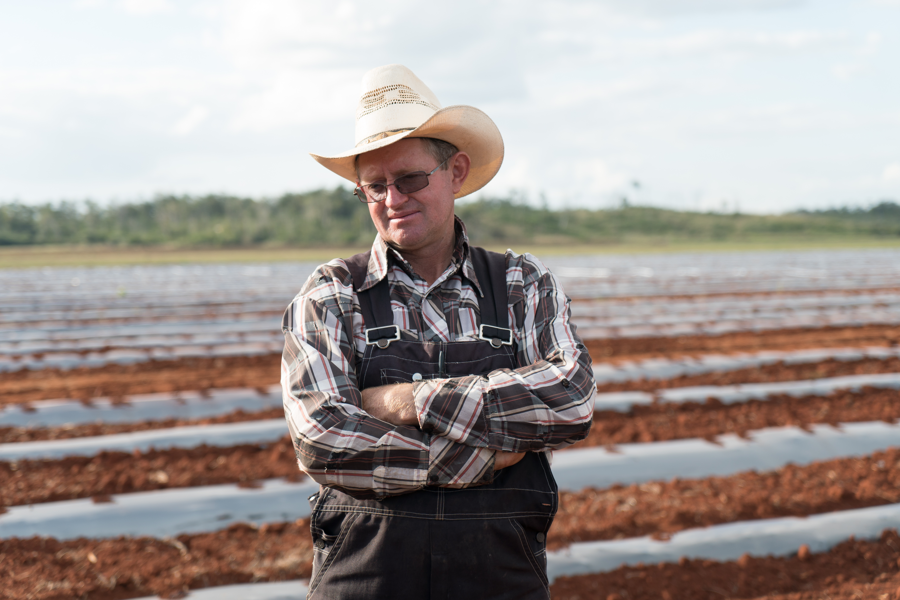
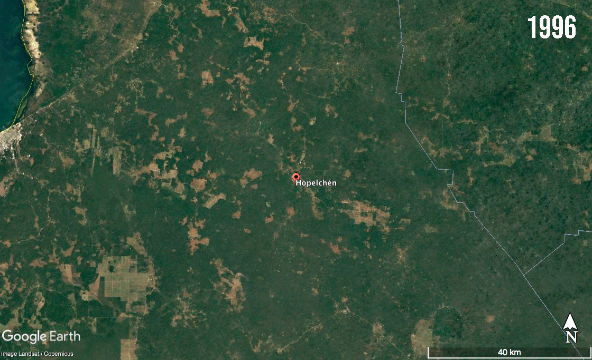

At the heart of the feud between Mayans and Mennonites is how the newcomers use small aircrafts for fumigation of the fields. The people of Hopelchén, in the state of Campeche, largely dependent on their bees, say the pesticides have been killing or driving them away.
Beekeepers like del Carmen say the bees stop producing honey after contact with the pesticides the Mennonites use, including the herbicide sold by Monsanto's for use on its genetically modified crops.
Research has found that Monsanto’s glyphosate makes bees more vulnerable to sickness. This February, a risk assessment by the European Food Safety Authority concluded that certain active substances of pesticides could be putting the bees at risk.
And the collapse of bee colonies in the region has coincided with Mennonite farmers introduction of the genetically modified soybeans to the region. Between 2012 and 2017, for example, honey production in Campeche decreased by 51 percent, according to data from the Mexican Ministry of Agriculture.
In 2012, a risk assessment by the National Commission for the Knowledge and Use of Biodiversity (CONABIO) warned that shipments of Mexican honey exported to Europe were getting rejected for testing positive for genetically modified soybean pollen and that granting permission to plant the soybeans would likely seriously affect the beekeepers.
According to interviews and pictures taken by the Mayans, the aircrafts fly above their towns, spreading all kinds of pesticides on the schools and houses.
And it’s getting edgy. One often repeated story says a Mennonite crop-duster recently shot down while spraying pesticides.

Mechanized fields in the Mennonite camp of Santa Fe.
Driving through the Mennonite camp of Santa Fe, one of the wealthiest in Hopelchén, it’s possible to see the landing strips and the hangars where the aircrafts are stored. The Ministry of Communications and Transportations doesn’t have a valid authorization for a landing strip for agricultural aviation in that area, according to its database updated on January 2019.
Mayan farmer William Rivero, 74, is an opponent to the introduction of genetically modified seeds in the Yucatan Peninsula. A cheerful man, recently he stood shirtless in his backyard, washing his clothes by hand, while his sick wife rested in bed.
In a Spanish spoken with a singsong Mayan accent, Rivero says the bees are not the only ones affected by the pesticides.
“When they fumigate, the deer, the pigs and the badgers in the forest die,” he said. “But they still carry on with their aircrafts, they cannot be controlled.”

William Rivero outside his house in Hopelchén.
Pesticides are sold everywhere. In the main square of Hopelchén there are six stores that sell pesticides, located right next to the hospital, the veterinary, the market, restaurants and the park. The used cans can be found in the middle of the forest, on the roads and scattered in the fields.
For the Mayans however, the Mennonites seem to be assaulting every part of their lives.
The Mennonites, for example, have also installed absorption wells that go underground to the phreatic mantle, the main source of irrigation.
But during rainy seasons, however, there is often too much water for modern agriculture. In many areas, the Mennonite farmers short-circuit the flooding by pumping the excess water back into underground wells, polluting the aquifer with pesticides.
Researchers with the University of Campeche found traces of glyphosate in bottle drinking water sold in three Mayan communities, with concentration five times higher than the maximum permitted level in Mexico. The concentration found in wells used as water sources was ten times higher than the level allowed in the European Union and six times the level permitted in the United States.
They also found glyphosate in seven urine samples of 20 people they tested in five Mayan communities.

Artificial drainage at a Mennonite field in Hopelchén.
The friction between the Mennonite and the Mayan communities began in 2012, when the Mexican government authorized 253,500 hectares in seven states, including Campeche, to be planted with the genetically modified soybeans sold by transnational company Monsanto.
The soybeans were mainly sold to the Mennonites, who cultivated them in their fields. The soybeans are modified in a way that makes them immune to the pesticide glyphosate, commonly known in the United States as Roundup.
The Mayans, afraid that the genetically modified soy and the glyphosate would kill their bee hives, created the Collective of Mayan Communities of Los Chenes and sued the Mexican government to revoke the permission given to Monsanto.
The collective won the case in 2015, when the Supreme Court suspended the permission until the Mexican government consulted with the indigenous Mayans over the use of genetically modified soybeans in Hopelchén.
It’s a human right stated in the Mexican constitution that indigenous communities must be informed about and accept any major project that affects them or their lands.
The Mayans, however, complain the subsequent process was a farce and rigged against them.
The consultation was organized in 2016 by the National Commission for the Development of the Indigenous People (CDI) and the Intersecretarial Commission on Biosafety of Genetically Modified Organisms (CIBIOGEM).
Leydi Pech, leader of the Mayan collective, said that, on the first day of the consultation, there were buses full of Mennonites outside were the meeting was to be held. Inside, it was already filled with Mennonites and owners of soy plantations. Mayans couldn’t even get into the room.
Although the Mayans asked the authorities to make room for the indigenous people, they were denied.
“The consultation was very difficult because we met the reality of the system and the corruption of the authorities. One expects that the authorities will help you, but the disappointing reality is that they won’t,” she said.

Last indigenous consultation meeting in Hopelchén. On the left, members of the Mennonite community and on the right, the Mayan population. Photograph courtesy of Robin Canul.
A video taken by a collective member shows a Mennonite in a screaming match, face to face with an indigenous man, each backed up by their own people.
“I’m also Mexican and I have a right to be here!” the angry Mennonite man screamed.
“You’re Mexican and I respect that. But you’re not an indigenous - Mayan - Mexican!” the other man replied.
Pech said the authorities held two different meetings for Mayans and Mennonites. Instead of getting scientific information on the risks and benefits of the genetically modified soy, the authorities gave the Mayans long speeches in support of the soybeans.
“On the first session, the authorities were looking for a confrontation,” Pech recalled. “The second session was much more difficult, because they insulted, threatened and screamed at us.”
After seven consultations, the Mayans gave up on the process complaining that they felt they were being railroaded.
Three years after the Supreme Court’s order, the Mayans are still negotiating with the federal government on how to continue the consultation.

Jorge Pech working on his apiary.
And the failed process has strained the relationship between some Mayans with their Mennonite neighbors.
Jorge Pech, Leydi’s brother, drives his pick-up truck through a rudimentary road he opened in the middle of the forest to get to his apiaries. He pointed at the carcasses of two pigs that were left in the middle of his road. He says the Mennonites dumped them on his road to try and intimidate him.
He recalled that, after giving a press conference on February 2016, he went back and found 28 of his beehives dead. He paid to have them tested and the lab found they were poisoned with a pesticide. Angry, he remembered wanting to kill those responsible.
“Why do this to them? Why hurt them? They’re innocent, they have nothing to do with this. It was very painful,” he said.
Leydi recognized that, for years, the Mayan community has tried to keep temper their anger and fight their battles in court. However, tensions run high every time an aircraft fumigates above town and a beehive dies.
After all, Mayans say the Mennonites are still cultivating and selling genetically modified soy.
Driving through the Mennonite fields of Nuevo Durango, members of the Mayan collective pointed at a small soybean plantation. They recognized it as genetically modified soy because everything around the plant is dead, a consequence of using glyphosate.
A Mennonite farmer, who only agreed to identify himself as Cornelius, admitted planting genetically modified soy during the last agricultural season, but said he did not know if they were Monsanto soybeans.
Since 2015, no company in Mexico has permission to distribute genetically modified soy in Campeche, according to the National Service for Agri-Food Health, Safety and Quality (SENASICA) databases.
In January 2018, however, Greenpeace Mexico released a report documenting 12 cases of farms planting genetically modified soybeans in Campeche during the 2016 and 2017 agricultural season, in spite of the Supreme Court order that revoked the permission to do so.
In 2016, the National Service for Agri-Food Health fined nine farmers 1 million pesos ($50,000) each but allowed them to sell the soy.
A year later, after recognizing that farmers were defying the Supreme Court order, the Mexican government issued a statement announcing it had revoked all permits for planting Monsanto’s genetically modified soybeans in seven states of Mexico.

A soy plant, suspected to be genetically modified.
The Mennonite farmers don’t seem to pay attention to legal and environmental issues. They are focused on working the land.
David Willer left the northern state of Chihuahua 20 years ago, in search for land and rain. A fidgety, terse man, he laughed and wondered out loud why his community named him manager of the storage lot in the Mennonite camp of Nueva Trinidad, where 50 families work on the fields.
Like many in his community, he left Chihuahua because there were no more lands available to farm. But life in Hopelchén is hard too. There is land, he said, but not much is available to buy. Additionally, the area is prone to long droughts and the topography makes the soil difficult to till.
“We’re interested in buying, but all the lands have an owner,” he said in Spanish, with a distinct northern Mexican accent. “We’re farmers, we go after the rain. We’re just interested in working.”

David Willer at the Mennonite camp of La Nueva Trinidad.
The history of Mennonites in Mexico goes back to the period after the Revolution. In 1922, 3,000 Mennonites arrived from Canada at the invitation of President Álvaro Obregón, who sought to populate and work the vast lands in the northern state of Chihuahua. As part of the deal, he also exempted Mennonites from mandatory military service, allowed them to keep speaking German and didn’t require the children to attend Mexican schools.
Today, although legally Mexican, the Mennonites still speak German and adhere to the same traditions they have kept for over two centuries. They don’t have telephones or computers, and the most orthodox refuse to use tractors with rubber wheels. Young boys are taught to drive tractors and girls are mostly kept inside their houses. They’re not allowed to marry outside of their communities and women are seldom seen interacting with non-Mennonites.
The men are distinguishable from the Mayans by their blue eyes and their sun-baked red skin from working under the sun. The Mennonites usually wear denim overalls and white hats with wide brims while the Mayan men wear jeans, t-shirts and baseball caps.

Mennonite farmers at the Nuevo Durango camp.
The first Mennonites arrived at Campeche in the nineties and were sold “national lands” that belonged to the Mexican government. In 1990, there were 485 Mennonites in seven camps located in Hopelchén, according to the Mexican Census.
But as the drug war along the US border escalated and the shortage of arable land worsened, many others followed. By 2010, their numbers have swelled eightfold with 4,134 Mennonites living in 40 camps and other communities.
By 2010, 45 percent of the inhabitants of Hopelchén were indigenous people and 11 percent were Mennonites.
Irma Gómez, expert on the situation in Hopelchén, said the Mennonite families are now facing the same issues they faced up north: There’s no more land available for every Mennonite to work.
“That’s why there is a lot of pressure on the land and a lot of pressure to buy it. There are no privately-owned lands left and very few national lands left, so the pressure to purchase the (Mayan) communal land has begun,” she said.
The indigenous Mayans have lived in the area around Hopelchén since 800 B.C. Their territory is organized in ejidos or communal lands, which can’t be sold without the authorization of the entire indigenous community, nor sold to someone who doesn’t belong to the community or ejido.
However, Mayan communities inside Hopelchén, like Dzibalchén and Iturbide, are known for selling their forest lands to the Mennonites. Last year, Iturbide sold 4,000 hectares of virgin forest to the Mennonite camp of Nuevo Durango.
Gerardo Braun, inhabitant of the camp, confirmed they purchased from the Mayans for 10,000 pesos (around 500 dollars) per hectare.

Gerardo Braun at his watermelon crops in the Nuevo Durango camp.
Ricardo Bernés, current leader of the indigenous community of Hopelchén, said that the Mennonites must first be approved as members of the community, or ejidatarios, and later certify the purchase of lands. He said leaders of the Mayan communities fool the members of the ejido into signing blank sheets of paper.
As proof, he showed a document signed in 2016 in which the previous leader of Hopelchén sold 441 hectares to a Mennonite who was recognized as an ejidatario during a community assembly.
“We have here an announcement that he (the Mennonite) had been accepted as neighbor of the community and says he’s worked the land for years, when he never did. This is a trick,” he said.
The Mennonites started tearing down part of the forest in the area, until members of the Mayan community stood on the way of the tractors. Pictures taken by the ejidatarios show a teenage Mennonite, clad in denim overalls, driving the tractor that tore down the forest in the area.
Soon after, federal authorities determined there was no authorization to change the use of the 441 hectares from forest to farmland. And though it was the Mennonites who illegally cut down the trees, the Mayan community lost a $100,000 subsidy to conserve the forest.
Later, a jury mandated a suspension on any further work on those hectares.
“The ejidatario did it because his wife was ill. She died a couple of weeks later and then he was sued. We know people do it because they need the money,” Bernés said.

Ricardo Bernés showing the contract made to sell 441 hectares of land.
But the Mayans are split on what to do about the newcomers.
It’s common for the Mayans to make oral contracts with the Mennonites to lease the hectares of communal land that they can’t afford to work. While a single Mayan man can only work around four hectares, a Mennonite with mechanized agricultural tools can work up to 50 hectares.
Beekeeper Baltazar Chi Uc, 43, said he’s been leasing his lands to the Mennonites for years. He makes them promise not to use aircrafts to fumigate the fields nor to plant genetically modified soy. And they always keep their word, he said.
“They pay rent and help me with my field. It’s all good.”
Mayans are also selling knowing that the Mennonites will tear down the forest and burn the land. Under the argument that the government doesn’t pay them enough to take care of the jungle, Bernés said the ejido may well sell all of their land destined for conservation.
All across Hopelchén, Mayan leaders said there are no job opportunities and that farming is not a good business. They said they’d be willing to dedicate themselves to forest conservation if the Mexican government paid them enough to do it. Until then, if the right offer comes along, the communities might agree to sell their lands.
According to Mexican law, the federal Ministry of Environment must grant permission to change forest land into farmland. The rules strict and few waivers are grant. Even if a forest burns down naturally, they owner must wait a decade before working the land.
However, it’s common for the Mennonites to burn down the forest and turn it into farmland.
Roberto Alcalá, Campeche state’s Minister of Environment, said his office knows the Mennonites are burning down forest land to force the change of land use. However, the state doesn’t have the power to detain or sanction the Mennonites. They can only alert the federal authorities when the land is being burnt or trees are cut down.
He said that he provided the Federal Attorney’s Office to Protect the Environment (known by its Spanish acronym PROFEPA) with names, vehicle plates, pictures and videos showing the deforestation taking place in Hopelchén, but the institution didn’t take action.
“The issue with PROFEPA goes in two ways: the lack of trained inspectors to deal with these issues and the corruption, which everyone knows exists. They (the inspectors) warn them ahead so that, when we go verify, nobody is there and we can’t enter because they put up gates and padlocks”, he said.
“Of course, it’s frustrating.”
PROFEPA officials declined to give an interview on the subject due to the government presidential transition in Mexico, during which all public officials have been forbidden from talking to the press without authorization from the president’s press office.
However, on a press release published on November 30, 2018, it recognized that the Mennonites tear down trees in forest areas and use the wood for charcoal.
According to their information, between 2009 and 2017, they started 37 administrative investigations, presented 18 criminal complaints before the General Attorney’s Office and sanctioned the Mennonites with 3 million pesos, approximately 100,500 dollars.
However, in 2017 alone, Campeche’s Ministry of Environment identified 108 unauthorized deforestation episodes covering 2,210 hectares, according to Alcalá.

Forest land by the Mennonites in the process of being torn down.
Those efforts to reign in the Mennonites and others from destroying the forest have had little effect.
The need for agricultural land has turned Hopelchén into the second most deforested municipality in Mexico. Between 2001 and 2017, the area lost 167,619 hectares of forest and trees, almost one fourth of Hopelchen’s entire territory, according to Global Forest Watch.
The jungle in Campeche is part of an important biological corridor formed between Mexico, Guatemala and Belize, which hosts protected species like the jaguar, eagles, parrots and trees on the verge of extinction, like the chicle and the mahogany.

Experts pointed out that the deforestation has paralleled to the expansion of Mennonites’ mechanized agriculture, which has made Hopelchén one the largest producers of corn in the country and has a booming soy crop.
In 2004, for example, Hopelchén was producing 220 tons of soy a year. By 2017, production had grown to 28,550 tons a year, according to data from the Ministry of Agriculture.
Leydi Pech, leader of the Mayan collective, said it’s pains her to witness how the jungle is being taken over. Sitting next to her stingless bee apiaries made of hollowed-out trunks of trees sealed with mud, she admits she sometimes feels overwhelmed and about to break.
But she remains positive, figuring out solutions, organizing her community and booking meetings with the Mexican government.
“Water pollution, deforestation, pesticides, bee death, aircrafts. All our towns have agreed to fight against it,” she said in Spanish.
“Es nuestra bandera de guerra.”

Leydi Pech at her apiary.